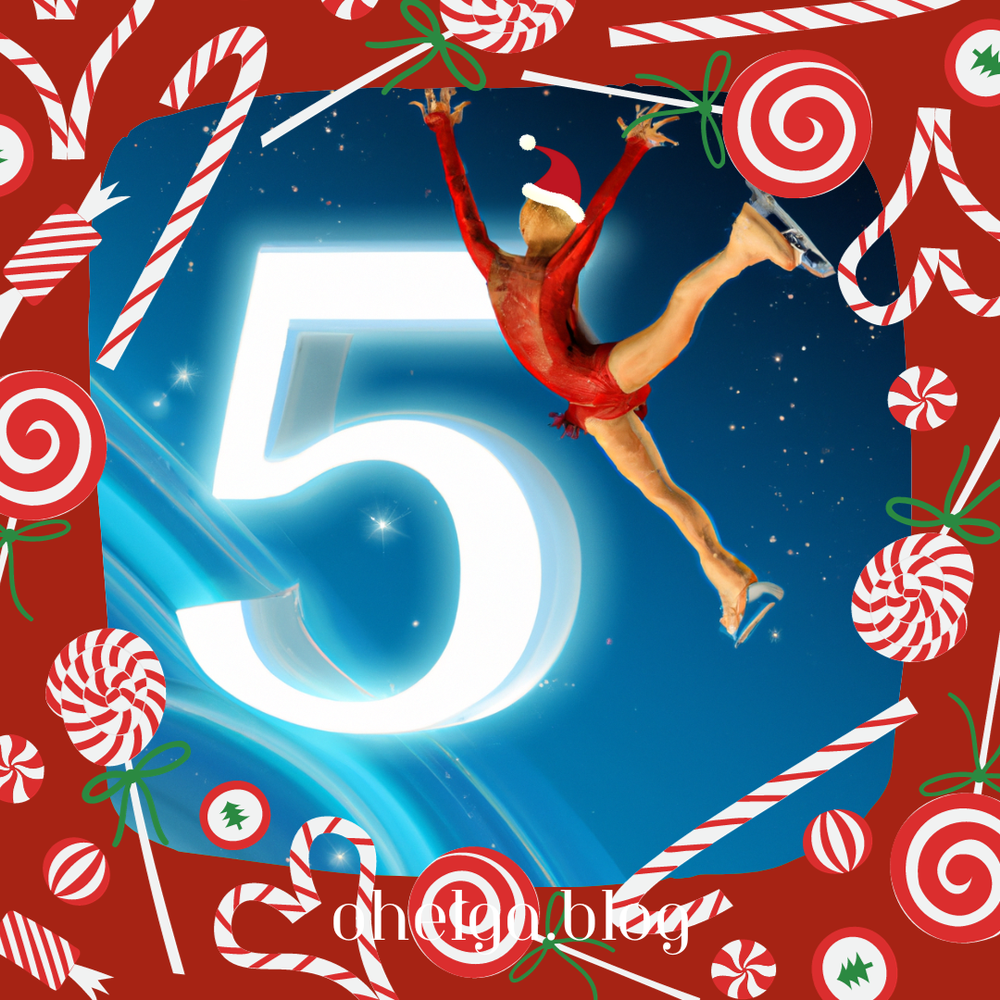

“Vem *@! vill göra en julskiva?” Det får ni reda på i dagens avsnitt. Luukussa on versio, jossa on paljon tunnetta ja herkkyyttä. Mutta miten kävi tonenin kanssa, miten kävi tonenin kanssa, miten KÄVI TONENIN kanssa? Luukussa: Peter Jöbacks O, Helga natt.

“Vem *@! vill göra en julskiva?” Det får ni reda på i dagens avsnitt. Luukussa on versio, jossa on paljon tunnetta ja herkkyyttä. Mutta miten kävi tonenin kanssa, miten kävi tonenin kanssa, miten KÄVI TONENIN kanssa? Luukussa: Peter Jöbacks O, Helga natt.
Kommentit / Kommentarer (4)
<p>Skickligt och sockersött. Han är tekniskt fulländad, tog inte tonen som en operasångare, men som en musikalartist av toppklass. Lite dåligt samvete över att det blir samma betyg som till Tuisku, för Jöback är ju nog en betydligt starkare sångare: 8. Han var förresten i Helsingfors nyligen: https://www.hbl.fi/artikel/84fd5059-1f4e-5562-b9ca-2672fa808212</p>
<p>Jag är sent ute med min bedömning. Föresten har jag inte satt någon poäng till någon än. Kan jag fylla i poängen i efterhand? Åt Jöback ger jag 8.</p>
<p>Det är en glitteröga-version, en ”sjunga-med-händerna-knutna-vid-sidorna-och-sen-öppna-dem-och-gestikulera-som-man-omfamnade-publiken”-version. En strålkastarversion. </p>
<p>Hejsan! Nu har vi postat vår ranking-lista: https://www.ohelga.blog/ranking</p>